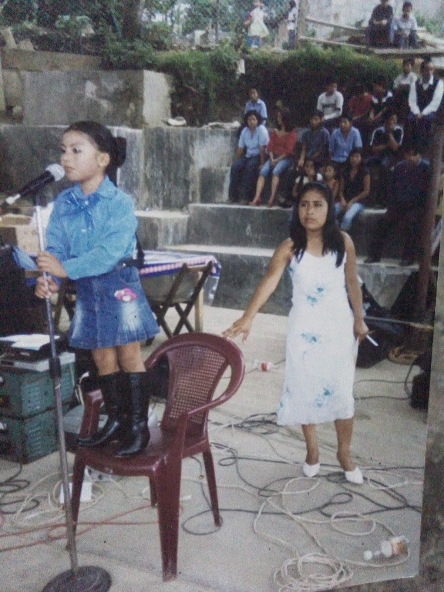

Para Lisandi
Presiona una foto y elije un color dentro de la foto cuando:
Te haga falta fe
Necesites perdonar
Estes enojada
Estes triste
Estes preocupada
Estes feliz

Ver videos
×
×
Elige un video
Video 1
Video 2
Video 3 - New
×